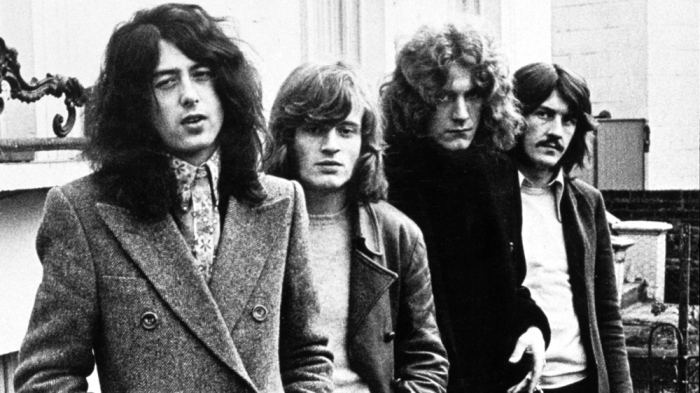
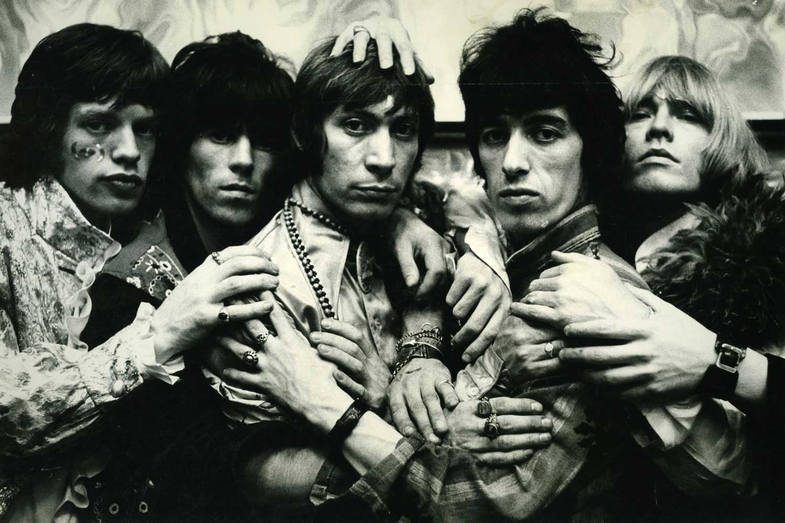

Musicians
David Bowie
David Robert Jones (8 January 1947 – 10 January 2016), known professionally as David Bowie (/ˈboʊi/ BOH-ee),[2] was an English singer-songwriter and actor. He was a leading figure in the music industry and is considered one of the most influential musicians of the 20th century. He was acclaimed by critics and musicians, particularly for his innovative work during the 1970s. His career was marked by reinvention and visual presentation, with his music and stagecraft having a significant impact on popular music. During his lifetime, his record sales, estimated at over 100 million records worldwide, made him one of the world's best-selling music artists. In the UK, he was awarded ten platinum album certifications, eleven gold and eight silver, and released eleven number-one albums. In the US, he received five platinum and nine gold certifications. He was inducted into the Rock and Roll Hall of Fame in 1996.
Born in Brixton, South London, Bowie developed an interest in music as a child, eventually studying art, music and design before embarking on a professional career as a musician in 1963. "Space Oddity" became his first top-five entry on the UK Singles Chart after its release in July 1969. After a period of experimentation, he re-emerged in 1972 during the glam rock era with his flamboyant and androgynous alter ego Ziggy Stardust. The character was spearheaded by the success of his single "Starman" and album The Rise and Fall of Ziggy Stardust and the Spiders from Mars, which won him widespread popularity. In 1975, Bowie's style shifted radically towards a sound he characterised as "plastic soul", initially alienating many of his UK devotees but garnering him his first major US crossover success with the number-one single "Fame" and the album Young Americans. In 1976, Bowie starred in the cult film The Man Who Fell to Earth, directed by Nicolas Roeg, and released Station to Station. The following year, he further confounded musical expectations with the electronic-inflected album Low (1977), the first of three collaborations with Brian Eno that came to be known as the "Berlin Trilogy". "Heroes" (1977) and Lodger (1979) followed; each album reached the UK top five and received lasting critical praise.
After uneven commercial success in the late 1970s, Bowie had UK number ones with the 1980 single "Ashes to Ashes", its parent album Scary Monsters (and Super Creeps), and "Under Pressure", a 1981 collaboration with Queen. He reached his commercial peak in 1983 with Let's Dance; the album's title track topped both UK and US charts. Throughout the 1990s and 2000s, Bowie continued to experiment with musical styles, including industrial and jungle. He also continued acting; his roles included Major Jack Celliers in Merry Christmas, Mr. Lawrence (1983), Jareth the Goblin King in Labyrinth (1986), Pontius Pilate in The Last Temptation of Christ (1988), and Nikola Tesla in The Prestige (2006), among other film and television appearances and cameos. He stopped touring after 2004 and his last live performance was at a charity event in 2006. In 2013, Bowie returned from a decade-long recording hiatus with The Next Day. He remained musically active until he died of liver cancer at his home in New York City, two days after his 69th birthday and the release of his final album, Blackstar (2016).
Back to top
Led Zeppelin

Led Zeppelin were an English rock band formed in London in 1968. The group consisted of vocalist Robert Plant, guitarist Jimmy Page, bassist/keyboardist John Paul Jones, and drummer John Bonham. With their heavy, guitar-driven sound, they are regularly cited as one of the progenitors of heavy metal, although their style drew from a variety of influences, including blues and folk music.
After changing their name from the New Yardbirds, Led Zeppelin signed a deal with Atlantic Records that afforded them considerable artistic freedom. Although the group were initially unpopular with critics, they achieved significant commercial success with eight studio albums released over ten years, from Led Zeppelin (1969) to In Through the Out Door (1979). Their untitled fourth studio album, commonly known as Led Zeppelin IV (1971), and featuring the song "Stairway to Heaven", is among the most popular and influential works in rock music, and helped to secure the group's popularity.
Page wrote most of Led Zeppelin's music, particularly early in their career, while Plant generally supplied the lyrics. Jones's keyboard-based compositions later became central to the group's catalogue, which featured increasing experimentation. The latter half of their career saw a series of record-breaking tours that earned the group a reputation for excess and debauchery. Although they remained commercially and critically successful, their output and touring schedule were limited during the late 1970s, and the group disbanded following Bonham's death from alcohol-related asphyxia in 1980. In the decades that followed, the former members sporadically collaborated and participated in one-off Led Zeppelin reunions. The most successful of these was the 2007 Ahmet Ertegun Tribute Concert in London, with Bonham's son Jason Bonham on drums.
Many critics consider Led Zeppelin one of the most successful, innovative, and influential rock groups in history. They are one of the best-selling music artists in the history of audio recording; various sources estimate the group's record sales at 200 to 300 million units worldwide. With RIAA-certified sales of 111.5 million units, they are the third-best-selling band and fifth-best-selling act in the US. Each of their nine studio albums placed in the top 10 of the Billboard album chart and six reached the number-one spot. They achieved eight consecutive UK number-one albums. Rolling Stone magazine described them as "the heaviest band of all time", "the biggest band of the Seventies", and "unquestionably one of the most enduring bands in rock history". They were inducted into the Rock and Roll Hall of Fame in 1995; the museum's biography of the band states that they were "as influential" during the 1970s as the Beatles were during the 1960s.
Back to top
Rolling Stones

The Rolling Stones are an English rock band formed in London in 1962. The first stable line-up consisted of bandleader Brian Jones (guitar, harmonica, keyboards), Mick Jagger (lead vocals, harmonica), Keith Richards (guitar, vocals), Bill Wyman (bass guitar), Charlie Watts (drums), and Ian Stewart (piano). Stewart was removed from the official line-up in 1963 but continued to work with the band as a contracted musician until his death in 1985. The band's primary songwriters, Jagger–Richards, assumed leadership after Andrew Loog Oldham became the group's manager. Jones left the band less than a month before his death in 1969, having already been replaced by Mick Taylor. Taylor left in 1974 and was replaced in 1975 by Ronnie Wood who has since remained. Since Wyman's departure in 1993, Darryl Jones has served as touring bassist. The Stones have not had an official keyboardist since 1963, but have employed several musicians in that role, including Jack Nitzsche (1965–1971), Nicky Hopkins (1967–1982), Billy Preston (1971–1981), Ian McLagan (1978–1981), and Chuck Leavell (1982–present).
The Rolling Stones were at the forefront of the British Invasion of bands that became popular in the United States in 1964 and were identified with the youthful and rebellious counterculture of the 1960s. Rooted in blues and early rock and roll, the band started out playing covers but found more success with their own material; songs such as "(I Can't Get No) Satisfaction" and "Paint It Black" became international hits, and Aftermath (1966) – their first entirely original album – has been considered the most important of the band's formative records.[1] After a short period of experimentation with psychedelic rock in the mid-1960s, the group returned to its "bluesy" roots with Beggars Banquet (1968), Let It Bleed (1969), Sticky Fingers (1971), and Exile on Main St. (1972). It was during this period they were first introduced on stage as "The Greatest Rock and Roll Band in the World".[2][3]
The band continued to release commercially successful albums through the 1970s and early 1980s, including Some Girls (1978) and Tattoo You (1981), the two best-sellers in their discography. During the 1980s, the band infighting curtailed their output and they only released two more underperforming albums and did not tour for the rest of the decade. Their fortunes changed at the end of the decade, when they released Steel Wheels (1989), promoted by a large stadium and arena tour, the Steel Wheels/Urban Jungle Tour. Since the 1990s, new material has been less frequent. Despite this, the Rolling Stones continue to be a huge attraction on the live circuit. By 2007, the band had four of the top five highest-grossing concert tours of all time: Voodoo Lounge Tour (1994–1995), Bridges to Babylon Tour (1997–1998), Licks Tour (2002–2003) and A Bigger Bang (2005–2007).[4] Musicologist Robert Palmer attributes the endurance of the Rolling Stones to their being "rooted in traditional verities, in rhythm-and-blues and soul music", while "more ephemeral pop fashions have come and gone".[5]
The Rolling Stones were inducted into the Rock and Roll Hall of Fame in 1989 and the UK Music Hall of Fame in 2004. Rolling Stone magazine ranked them fourth on the "100 Greatest Artists of All Time" list and their estimated record sales is 200 million. They have released 30 studio albums, 23 live albums and numerous compilations. Let It Bleed (1969) marked the first of five consecutive No. 1 studio and live albums in the UK. Sticky Fingers (1971) was the first of eight consecutive No. 1 studio albums in the US. In 2008, the band ranked 10th on the Billboard Hot 100 All-Time Top Artists chart. In 2012, the band celebrated its 50th anniversary. They still continue to release albums to brisk sales and critical acclaim; their most recent album Blue & Lonesome was released in December 2016 and reached No. 1 in the UK and No. 4 in the US and won a Grammy Award for Best Traditional Blues Album. The group also continues to sell out venues, with their recent No Filter Tour running for two years and concluding in August 2019.
Back to top